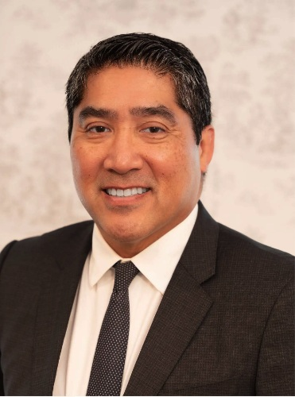

Experience in physical medicine, pain and rehabilitation
Meet Dr. Albert V. Retodo and learn about the medical practice’s focus on injury-related concerns.
Albert V. Retodo, MD
ReMD Wellness and Injury Center, Inc. focuses on evaluation and care of patients with musculoskeletal pain, injury-related symptoms, and functional limitations.
Professional qualifications
- Board Certified, American Academy of Physical Medicine and Rehabilitation
- Board Certified, American Board of Pain Medicine
- Board Certified, American Academy of Electrodiagnostic Medicine
- Qualified Medical Evaluator

Restore confidence in movement.
Our philosophy is to listen closely, evaluate thoughtfully and discuss an individualized plan based on the patient’s symptoms, history and needs.
From the football field and wrestling mat to the golf course
Before pursuing medicine, Albert V. Retodo, MD played high school football and competed in wrestling. Today, golf remains part of his active lifestyle. Those personal experiences give him a first-hand appreciation for the demands of training, competition, repetitive movement and the desire to return to the activities people enjoy.
At ReMD Wellness, he brings that athlete’s perspective to his work in physical medicine, rehabilitation and injury evaluation—listening carefully to how symptoms affect each patient's goals, whether that means returning to a sport, working comfortably or staying active.
Movement matters at every age
From competitive athletes to weekend golfers, activity and mobility are central to an individualized recovery plan.